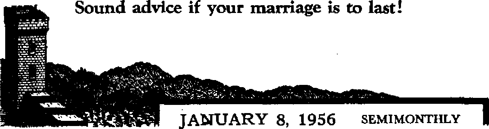
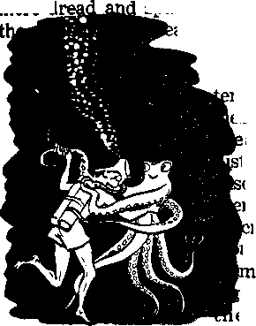
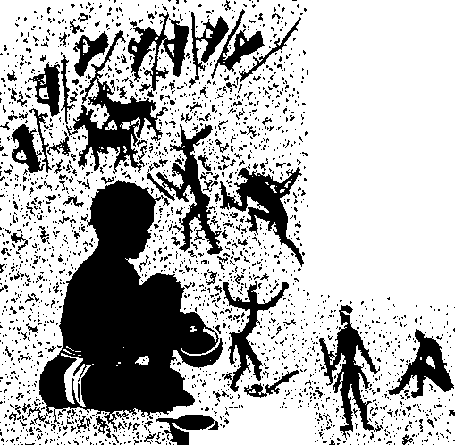
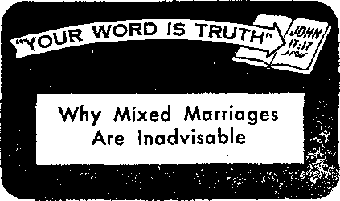

UNVEILING THE MYSTERIOUS SOUL
Is it mind, spirit or man himself?
^Triumphant Kingdom” Assemblies in Europe
Unexcelled series of Christian gatherings
How Dangerous Is the Octopus?
Shy, timid and delicious!
Why Mixed Marriages Are Inadvisable
THE MISSION OF THIS JOURNAL
News sources that are able to keep you awake to the vital issues of our times must be unfettered by censorship and selfish interests. "Awake!” has no fetters. It recognizes facts, faces facts, is free to publish facts. It is not bound by political ambitions or obligations; It is unhampered by advertisers whose toes must not be trodden on; it is unprejudiced by traditional creeds. This journal keeps itself free that it may speak freely to you. But it does not abuse its freedom. It maintains integrity to truth.
"Awake !’* uses the regular news channels, but is not dependent on them. Its own correspondents are on all continents, in scores of nations. From the four corners of the earth their uncensored, on-the-scenes reports come to you through these columns. This journal’s viewpoint is not narrow, but is international. It is read in many nations, in many languages, by persons of all ages. Through its pages many fields of knowledge pass in review—government, commerce,'religion, history, geography, science, social conditions, natural wonders—why, its coverage is as broad as the earth and as high as the heavens.
“Awake I” pledges itself to righteous principles, to exposing hidden foes and subtle dangers, to championing freedom for all, to comforting mourners and strengthening those disheartened by the failures of a delinquent world, reflecting sure hope for the establishment of a righteous New World.
Get acquainted with “Awake!” Keep awake by reading “Awake!”
Published Semimonthly Bi WATCHTOWER BIBLE AND TRACT SOCIETY, INC.
117 Adams Street Brooklyn 1, N. Y., TJ. 8. A.
N. H. Knohb, prerident Ghani Soitsh, Secretory
Printing thii issue: 1(550,000
Luuun in which tki> mttwini It PlilhhH: SeailBteCthly—AfriiMiW. English, Finnish, French, Genaan, Hollandiah, Italian, Nonregfan, Spanish, Bwedinb.
Monthly—Danish, Greet, Portuguese, Ukraiuian.
Offices Yearly subscription rate
AffilNn, U.S., 117 Adama 8L, Biwklyn 1, N.Y, fl AiStmJIa, 11 Beresford Ed., StrathfWd, N.S.W, 8/-Cult*, 40 Irwin Are., Toronto 5. Ontario ft iMtaad, 34 £»*®c Terrace, Londoa), W. 2 7/*
Hi* ZoilaH, O.P.O. Bos 30, Wellington, C. 1 7/-Saath Afrita, Private Bag, Kturirfonteliu Tri, TA
intend n wcond-claM matter at Brooklyn,
Five cents a copy
BiHlttaMtf should be scot to office in your country In coTTTpliance with regulations to guarantee saffl delivery of money, Remittances are accepted at Brooklyn from countries where no office te located, by International money order only. Subscription rates In different countries are here stated In local currency. ffetlM *f expiration (with renewal blank) is Rettt at least two issues before subscription expires. Chimes of addnsa when sent to our office may bo expected effective within one montb. Send your old u well aa new addre®.
r.f Act of March 3, 1879. Printed in U. B. A.
CONTENTS
|
For Women Only? |
3 |
Inflammation—an Amazing Defense | |
|
Time to Change Names |
4 |
Mechanism |
21 |
|
Unveiling the Mysterious Soul |
5 |
Would It Make Any Difference? |
24 |
|
What Is the Human Soul? |
7 |
The Cycle Completed |
24 |
|
How Dangerous Is the Octopus? |
9 |
“Your Word Is Truth” | |
|
“Triumphant Kingdom” Assemblies |
Why Mixed Marriages Are Inadvisable |
25 | |
|
In Europe |
12 |
Jehovah’s Witnesses Preach in All | |
|
The Monkey That Refused to Smoke |
16 |
the Earth—The Netherlands |
27 |
|
The Bushmen of Africa |
17 |
Do You Know? |
28 |
|
Appetites Courageous |
20 |
Watching the World |
29 |
For Women Only?
JUST leave religion up to my wife,” 1 the husky laborer said to the young witness of Jehovah who had called at his door on a pleasant Sunday morning. “Come back when she ishome.” The man’s objection was a common one, but the witness of Jehovah knew why so many men are not particularly concerned about religion.
“That’s a common view,” he said. “A lot of us men leave religion up to the womenfolks. We men are concerned with the daily struggle to bring home the bacon and often aren’t particularly interested in religion. But, you know, the Bible has a great deal more to say about the things we’re interested in than many men think.
“Just look here,” he urged, as he opened his Bible to Second Timothy, chapter three. “The apostle Paul wrote this nearly two thousand years ago, yet it tells about the very day in which we are living. It says: ’But know this, that in the last days critical times hard to deal with will be here.’
“Isn’t that true of our day?”
The householder agreed that it is.
“Then look at what else it says: ‘For men will be lovers of themselves, lovers of money, self-assuming, haughty, blasphemers, disobedient to parents’—you see, it even mentions juvenile delinquency—‘without gratitude, with no loving-kindness, having no natural affection, not open to any agreement, slanderers, without selfcontrol, fierce, without love of goodness, betrayers, headstrong, puffed up with selfesteem, lovers of pleasures rather than lovers of God, having a form of godly devotion but proving false to its power?
“Tell me,” the witness asked, “Do you think these conditions exist today?” And again the householder agreed that they do. “Well, it even says in verse seven that in these ‘last days’ men would be ‘always learning and yet never able to come to an accurate knowledge of truth.’ ”* And it was dear to the householder that there is greater knowledge today, that even the preachers are better trained, but that, with it all, man still has not learned the apparently simple Bible truth about why man cannot get along with his neighbor and live in peace with the world.
It was pointed out that more men would be interested in what the Bible says if they really knew how thoroughly it applies to our day. And this householder decided that there might be something to that, for this Was the first minister he had listened to in a long while.
The minister continued: “A knowledge of God’s Word really is important. In Hosea 4:6 we are told that God’s people can be destroyed for lack of it. And in John 17:3 we are told that knowledge of Jehovah God and his Son Christ Jesus really
♦ Quoted from 2 Timothy 3; 1-5, 7, Neu? World Tran*.
does lead to everlasting life. Further, the Bible shows the reason earth is In its present mess and the outcome and surely everyone would like to know that!”
What is the outcome? That was explained from Matthew 24, where Jesus' disciples asked him what would be the sign of his second presence and of the end of the present wicked system of things (often called "world” in the Bible). In answer Jesus said that there would be many false reports about his second presence and, further, that the “wars and reports of wars” throughout the centuries would not mark the accomplished end. Something different must occur to mark the sign that Jesus was talking about.
Sure enough, the next two verses say: "For nation will rise against nation and kingdom against kingdom, and there will be food shortages and earthquakes in one place after another. AH these things are a beginning of pangs of distress/'—Matthew 24:7, 8, New World Trans.
When did such a thing as that occur? The beginning of total mobilization, the first time nation rose against nation and kingdom against kingdom so that the world was at war was just over forty-one years ago, in 1914. Man thought that that war would make the world "safe for democracy/ but Jesus had pointed out that this would be only "a beginning of pangs of distress/’ And how true that prediction proved to be, for, just the opposite of providing safety for democracy, World War I was followed by World War II, and now by the fear of a hydrogen-powered World War HI!
Not only did Jesus foretell these things, but Matthew 24 continues to describe the very occurrences of the forty-one years since 1914. ‘The most Important thing aoout that?* the witness explained, "Is that one yener&tton would see these things both begin and fetid, for verse thirty-four tells us that Jesus said: ‘Truly I say to you that this generation will by no means pass away until all these things occur/ ” Thus, the end of this present wicked system of things will come within the lifetime of some people who are more than forty-one years old today!
These are important facts. They mean that the prayer that God's kingdom would come and his will be done ‘in earth as it is in heaven' is about to be fulfilled. Jesus would not have taught us to pray that prayer if God did not have the power to fulfill it. He can and will do it! The only question is; When? And the Bible definitely answers: Soon!
His interest having been stirred, the man of the house accepted Bible literature, like the magazine you are now reading, and a return visit was arranged to help him to learn more about the information that the Bible really does have for our day.
The Bible does deal with our time and with things that are of vital concern to us. Jt provides reliable information and its message is urgent. It is not just for women, children and old people. It is provided by the most manly and powerful of all gods, the Supreme One, Jehovah. Dig into it. Gain a knowledge of what it contains and act upon that knowledge, for, while your day’s work may bring home the bacon or buy the beans, the value of what you learn and teach your family from this book, the Bible, can be with you for all eternity.
TIME TO CHANGE NAMES
In Johannesburg a man named Johnny Gallon was fined £2 for drunkenness. To the prisoner at the bar the magistrate said: “I suggest you change your name to Tint,1 which may remind you not to drink so much in the future."
11 UNVEILING THE
and you could put a million of them in a
about it. Wise men have nutshell,” An eminent Bible scholar called
es have thought, or exterior, without body, shape, or parts, dreamed and written
S<jm« claim if fa be the mind oiman. Others say it is the spirit of man. Stilt others will honestly admit that they do not know what if is. Do you know? What light stow the Bible ; and secular history short on this simple some, thing called soul?The truth will surprise you. ■,
Throughout the ages poets and prophets, saints and sag-
speculated upon it, physicians have dissected and delved deep into the mysteries of living and inert matter to discover it, philosophers have expressed opinions regarding it, chemists have demonstrated it and naturalists have cultivated’ it. Yet none venture to say specifically what it is. All their reports are shrouded in mystery and supposition. Their theories are a bedlam of generalities and uncertainties, clothed in ambiguity and mysticism. After thousands of years of speculation the average man still inquires: “What is this mysterious thing called the soul?”
According to a concise Cyclopedia of Religious Knowledge, by Elias B. Sanford, “The Epicureans thought the soul was a subtle air, composed of primitive atoms; the stoics thought it wa£ a flame,portion : of heavenly light; while the Cartesians made thinking the essence of the soul. ...
Both Pythagoras and Plato held the brain to be the central dwelling-place of the soul.” The materialist “holds the soul to i be a product or property of the bodily organization, and in no sense independent of it.” As the body is not immortal, “so nei-i ther can the soul be.”
Augustine taught the soul to be simple, immaterial and spiritual, devoid of quantity and spatial extension. He argued its immortality, claiming that it is the repository of imperishable truth. A Methodist bishop defined the soul as “without interior the bishop’s definition “absurd,” stating: "Really, the bishop gave an excellent definition of nothing; and all will agree that a hundred millions of nothings could be put into the smallest kind of a nutshell and have room to spare.”
Philosopher William Crawshaw conjectured the soul to be “a diaphanous body, a sort of impalpable ghost with the shadowy outline of human features.” Sir Oliver Lodge assumed the soul might be “a sort of ethereal body as opposed to our obvious material body . . . but more permanent” Lamarck considered it to be a manifestation of cosmic mind, presumably electrical in nature. The author of Science Finds “The Human Soul” writes: “Somewhere, somehow, a human being dwells apart from his own brain, even from his own thoughts. And this consciousness above consciousness . . . appears to be the ‘human soul.’” However, not one of these authorities will clearly and definitely say what the soul is. They will frankly admit they do not know.
Belief in Soul Universal
Nevertheless, belief in the soul's immortality, say sociologists, is more widespread even than belief in a God or gods, Ralph Waldo Emerson wrote: “I have heard that wherever the name of man is spoken, the doctrine of immortality is announced; it cleaves to his constitution,” And again he said: “We are much better believers in immortality than we can give grounds for. The real evidence is too subtle, or is higher than we can write down in propositions.” Robert J, McCracken asserted that man-Jdnd’s “hope of immortality is intuitive and inbred. The intellect, the heart, the conscience demand it. There is an undis-courageable, inextinguishable assurance in man, rooted in something which he feels is of the very essence of his being, that death cannot be the end.” All these authorities agree with.the heathen poet who said: “Non omnis inoriar” “Not all of me will die.”
In Egyptian mythology immortality of the soul is all-important. The day of death is called “the moment of initiation into celestial life,” The ancient Greeks placed a coin in the mouth of the deceased as fare for the ferryman who guided the soul to the other side. So convinced were early Britishers of an afterlife that they even lent money to be repaid in another existence. And on the Fiji Islands there remains till this day a ridge, some forty feet long, that was to serve as a runway for departing souls.
Where the Doctrine Originated
How did the world come to believe that there was an immortal spiritual essence that thinks and consciously survives the body at death? The recognized authority Blackbume declares: “The separate existence of the soul was one of those doctrines which the Papacy borrowed from Paganism. Anaxagoras was the first among the Greeks who conceived of mind as detached from matter.” Bunsen in his work Egypt in Universal History, Vol. 4, p, 639, says: “The Egyptians were the first who taught the doctrine of the immortality of the soul, —a fact mentioned by all Greek writers from Herodotus to Aristotle, and confirmed by the monuments.” The doctrine as taught in Christendom, states Bayle’s Dictionary, is “mixed with Egyptian and Greek conceptions.”
And where did the Egyptians get it? Not from the Bible, because they were not believers in God's Word. They worshiped demon gods. And it was by “the ruler of the demons,” Satan the Devil, that they came to teach this doctrine. It was he and not God who said to Eve, “You positively will not die,” Jehovah had instructed the very opposite: “In the day you eat from it you will positively die.” But ever since Eve’s time earth’s majority has preferred to believe the lie of immortality to God’s statement of truth.—Mark 3:22; Genesis 3:4; 2:17; John 8:44, New World Trans,
The Bible does not teach immortality of the soul. Note how authorities unite to discredit the doctrine as a pagan falsehood. Olshausen in his Commentary says: “The doctrine of the immortality of the soul and the name are alike unknown to the entire Bible.” Jamieson, Fausset and Brown’s Commentary on the Old and New Testaments states in regard to First Corinthians 15:53, that “nowhere is the immortality of the soul, distinct from the body, taught; a notion which may erroneously have been derived from heathen philosophers. Scripture does not contemplate the anomalous state brought about by death as the consummation to be earnestly looked for (2 Cor. 5:4), but the resurrection.” Hastings’ Bible Dictionary declares: “Soul is throughout a great part of the Bible simply the equivalent of ‘life* embodied in living creatures. In the earlier usage in the
Old Testament it has no reference to the later philosophical meaning—the animating principle, still less to the idea of an ‘immaterial nature' which will survive the body.”
Martin Luther was bitterly assailed for not believing the pagan immortality of the soul doctrine. Cardinal Due Perren says: “Luther denied the immortality of the soul, whence he drew an argument against praying to saints, showing that the saints hear not our prayers. . . . Luther reckons this among the impieties of the Roman [Catholic] Church, that she believes in the immortality of the soul.” Luther himself wrote: “All that is said concerning the immortality of the soul is nothing but an invention of antichrist to make his pot boil.”—Bayle’s Historical and Critical Dictionary, Vol 3, p. 2617,
What Is the Human Soul?
Luther came to his conclusion about the soul on an incontrovertible basis, that of the Bible itself. We can do the samp. The Bible is very explicit in defining the soul. It says: “Then Jehovah God proceeded to form the man out of dust from the ground and to blow into his nostrils the breath of life, and the man came to be a living soul.” Yes, the “man, came to be a living soul.” There is nothing mysterious about this text, is there? Of course not. It is very plain and simple to understand. It tells us very directly that the living, moving, breathing creature, man, is a soul. The expression “living soul” here means nothing more nor less than a sentient creature, that is to say, a creature capable of sensation, perception and thought. Therefore, The Imperial Bible Dictionaryt by P. Fairbairn, says: The soul “is the very man himself, and accordingly we find the word translated by the English words person, self, creature, and any”—Genesis 2:7, New World Trans.
What might surprise you more is that the Bible teaches that anhpals are souls. Yes, every horse, every cow, every bird and every fish is a soul—all are living, moving, breathing creatures. The Heorew word for “soul” is applied to the lower animals many times in the Bible. However, poor Bible translations have obscured this important fact from the people. The Authorized Version reveals this truth in only one place, which reads: “Levy a tribute unto the Lord of the men of war which went out to battle: one soul of five hundred, both of the persons, and of the beeves, and of the asses, and of*the sheep.” Here the word “soul” is used respecting the lower creatures as well as in respect to man. In the New World Translation of the Hebrew Scriptures, also in The Emphasised Old Testament, by J. B. Rotherham, one will see numerous instances where the lower animals as well as men are referred to as souls.—See Genesis 1:20, 21, 24, 30; 2:19; 9:10, 12, 15, 16; Numbers 31:28.
Does the Soul Die?
Dr. Gustaf Stromberg, astronomer, said: “Seemingly a soul can never be annihilated.” Dr. Joseph B. Rhine, Duke psychologist, declared: “There is something about human personality that could survive,” but he does not elaborate or give proof. Linus M. Riordan, Ph,D., wrote: “Man’s soul is immortal, that is, immune from death.” But what proof do they give? Not any. Does the Bible agree with these men? Olshausen, Jamieson, Fausset, Brown and Hastings quoted earlier say no.
Note in what clear and simple language the Bible refutes the pagan doctrine: “The soul that sinneth, it shall die.” (Ezekiel 18:4, 20) If the soul dies, then it is not immortal, but mortal. Are these the only texts that say that? No, there are many. About Jesus it was prophesied that he would pour “out his soul unto death.” He
made “his soul an offering for sin.” Peter, speaking of Jesus, said: “Indeed, any soul that does not listen to that Prophet will be completely destroyed from among the people/’ John the apostle wrote: “Every living soul died, yes, the things in the sea/’ David said: “None can keep alive his own soul.” “He spared not their soul from death.” —Isaiah 53:10, 12; Acts 3:23; Revelation 16:3, New World Trans.; Psalm 22:29; 78:50.
Are we going to disbelieve God who says emphatically that a soul dies, and accept instead the doctrine of soul immortality based on Satan’s lie to Eve and pagan mythology? Sincere Christians will look into God’s Word before they decide.
Paul wrote that, aside from Jehovah God, Christ Jesus was “the one alone having immortality.” We are mortals. “This which is mortal puts on immortality,” says Paul. Immortality is a prize to be sought by footstep followers of Christ Jesus, and only 144,001 will gain this glorious reward. All others will remain mortal, with their continued existence dependent on the Lifegiver, Jehovah. Paul says: “Everlasting life [will be rendered by God] to those who are seeking glory and honor and incorruptibleness by endurance in work that is good.” If immortality were inherent, there would be no need to seek it. The fact that it is something to be sought proves that man does not possess it inherently.—1 Timothy 6:16; 1 Corinthians 15:54; Romans 2:6, 7, New World Trans.
Understanding the soul to be the living creature, we can understand why Peter says some 3,000 souls were baptized in one • day at Pentecost. He was not speaking of some ethereal shades but of living Christian converts. We can understand why the Bible says souls eat, hear, wash their clothes, do work. The fact that the Bible says the soul has blood and can do these various services does away with the popular theory that it is the mind or personality of man. Mind and personality are qualities and have no need for blood and do not exist apart from living organism. And, too, “the word ‘spirit’ is often used as if it were identical with the word 'soul/ ” says Fairbairn. “There is a distinction between them, which is carefully marked through the whole of Scripture.” Actually, there is not one scripture in the entire Bible that says man has an immortal soul. Certainly that alone is damaging evidence against its existence. Its adherents must cling solely to pagan mythology for their support. —Acts 2:41; Leviticus 4:2; 5:1-17; 7:18-21; 17:10-16, New World Trans.; Jeremiah 2:34.
Does not the natural aspiring of man to immortality prove that man has an immortal soul? No. It merely proves that he wants to live and not die. This feeling is inherent in man, because God created the first man to live, not to die. Had Adam not disobeyed God, he would never have died. He would be living today. But Adam disobeyed, sinned. And “the wages sin pays is death, but the gift God gives is everlasting life by Christ Jesus our Lord.” By accepting God’s gift, Adam’s offspring can gain back what Adam lost. They can live everlastingly, and thus have this inherent desire satisfied. Those who have died will gain life through a resurrection, and not through some ethereal soul.—Romans 6:23; John 5:28, 29, New World Trans.
To believe the pagan doctrine of immortality of the soul is to disbelieve the Bible and what God says about the soul. It means one denies the ransom of Christ Jesus, the doctrine of resurrection, the hope of a new world promised. It means we prefer pagan falsehood to Bible truth. And what you believe about the soul determines to what extent you believe in God.
SiVTOU enter into ■ F"*
I the beast” So | | "pj p
wrote Victor Hugo in
Toilers o/ the Sea as he began to describe an octopus devouring a human: “He draws
you to him, into him; and, boun less, you feel yourself emptied i frightful sac, which is a monste eaten alive is more than terrible; but to be drunk alive is inexpressible.”
Is the octopus this kind of terrible ster, lurking in sea caves, waiting to dart out and seize a diver with its eight arms and to drink him? Or is it a shy, timid creature, changing color in fright or hiding behind an inky smoke screen? Marine zoologists who have studied these odd animals hold to the second opinion. And aqualung divers who recently have had numerous experiences with octopuses have the same opinion. These authorities say in effect that the phrase “drunk alive” in the above-mentioned passage more likely referred to the condition of the novelist when he penned it than to the situation of a human meeting an octopus.
Why is it, then, that of all the inhabitants of the oceans probably none excite
more d
spawn more stories than ason is that novelists, such as Victor Hugo, have writ-n things about se eight-armed atures that t are not true, o many chil-n’s books have ribed the oc-usesinafright-anner, creat-a bias against e animals in
e
pus appears in a movie he is about to
inds of on is that
ourj^J. Another big almost every time an octodevour some hapless diver. Then, too, the comparatively few accounts of actual attacks by giant octopuses on deep-sea divers have often been greatly exaggerated. An obvious reason why the octopus is dreaded, of course, is the animal’s weird appearance, which, by human standards, hardly makes it eligible for the finals of a beauty contest. And it must be admitted that an examination of the octopus’ equipment does nothing to inspire confidence.
In a way there is not much to an octopus; he has not a bone in his body and is chiefly head and arms, eight of them, eigh arms or tenta-c 1 e s! Well equipped these tentacl are stud with two r of suction c Thus the o pus has six radiating li of power suckers t finally me around its mouth in a maze of suction cups. Obviously, prey forced into this pit of adhesiveness is held fast in the very jaws of destruction. For within its mouth is a parrotlike beak with which the octopus tears its food or its enemies to pieces. Then there are the octopus’ eyes—a pair of lidless, staring eyes, sometimes as large as saucers. Nor is that all. This creature is a living jet motor; he can shoot himself backward like a rocket almost faster than the eye caa follow.
arms— ike
A monstrous octopus is without doubt a formidable creature. Giant octopuses of the Pacific sometimes span more than thirty feet across from tip to tip of opposite arms. An octopus of this size can be dangerous. From time to time accounts of narrow escapes by divers crop up. Is this a display of octopus malice toward man? Zoological authorities think not. Since the attacks are comparatively few, it may be that the octopus is defending himself, or, what is more likely, protecting its family. For it is known that a mother octopus, like a mother bear protecting its cubs, will fight ferociously if she thinks her eggs are threatened. But whatever the reason for octopus’ attacks on divers, this certainly is significant: it is generally-conceded that no authentic cases of death from octopus attack are in existence.
Throwing more light on the real nature of these strange creatures are the experiences of aqualung divers. To the divers’ surprise they found that octopuses are shy, timid and retiring. Instead of attacking the divers, the octopuses tried to make fast getaways. Finding octopuses to be odd creatures, the divers got a great deal of enjoyment from them. They played with them and even waltzed with them. The book The Silent World tells about aqualung divers Frederic Dumas and Captain J. Cousteau. These men played with octopuses of virtually all sizes except the giants, which they never met. Said Captain Cousteau:
“Soon we were handling any size of cephalopod [octopus] we found. Dumas became a sort of dancing instructor. . .-.He would select an unwilling pupil, hold it firmly and gently and gyrate around, inducing the creature to follow. The octopod used every trick to escape. The bashful animal usually refused to fasten its suction cups to flesh. . . . The ink pf the octopus has been liberally diluted with journalistic fantasy.”
Just how wrong popular opinion is concerning octopuses is evident from this fact: most people believe octopuses to be giants or at least that small ones grow into giants; but in reality the vast majority, even when mature, are small creatures, less than a foot or two in diameter from tip of one arm to tip of opposite arm.
Spineless creature that he is, the octopus nonetheless has the respect of other sea creatures that are equipped with heavy armor. For the octopus is one of the most successful animals in the sea when it comes to winning a living. This probably comes as no surprise to anyone who has seen its eight arms in action. Woe to the plodding clam! Woe to the wayfaring crab! Woe to the incautious lobster! But octopuses live on sea food—not humans.
What of the octopus’ ink? It is not really frightful; in fact, it is most practical. It is often thought of as a smoke screen to help frightened octopuses escape enemies. The . ink may not be as simple as one might suppose. In recent years authorities have come to suggest that the ink is used to produce a mock-octopus shape to divert weak-eyed pursuers, since the size and shape of the puff roughly resemble a swimming octopus. The aqualung divers, as reported in The Silent World, said: "We found that the emission was not a smoke screen to hide the creature from pursuers. The pigment did not dissipate; it hung in the water as a fairly firm blob with a tail, too small to conceal the octopus.” It may be, then, that the ink is intended to be a mock octopus so that the enemy mistakes it for a real octopus, which, by executing one of his remarkable color changes, becomes more or less invisible as he darts off in a different direction.
Octopuses are remarkable, one authority says, “in that they exhibit more vivid, complicated and rapid color changes than do any other members of the animal kingdom.” They turn to any color to match their background—pink, red, purple, blue. Divers have even seen flashes of rainbow hues. Girl octopuses must arouse the emotions in boy octopuses by their beauty; at any rate when a boy octopus courts a girl, his emotions are powerful enough to overrule his natural impulse to assume a color that simulates his background, and he may glow red and pale white, with a whole gamut of intermediate shades and variations. If the octopus is blushing when he asks his girl for her hand in marriage, it may be that he is more bashful than even the aqualung divers supposed! Or could it be that he does not know which hand to ask for?
If anyone is entitled to present a bill of complaint on account of a tendency to seize and devour, it would be more appropriate for octopuses to prefer such charges against humans. In many countries, and since very ancient times, the octopus has been considered one of the very choicest of morsels. The Greeks and Romans considered it the finest food furnished by the sea. Pliny tells us that the gourmets of Rome ate every variety °f octopus known in the Mediterranean.
Today? Yes, octopuses are widely eaten, both small and large, both body and'tentacles. They are boiled, broiled, fried and pickled. Many Pacific and Mediterranean people relish octopus. Vendors in Mondello, near Palermo, set up booths along the water front each Sunday to sell boiled octopus for eating on the spot. Octopus meat is firm, pure white and of a mild, delicate flavor. Small ones are truly a delight to the palate of the most discriminating gourmet. Small ones are usually preferred.
North Americans generally shy away from octopus. The big difficulty may be that many have grown up since childhood loathing octopuses, thinking that they are man-eating monsters. Actually--the opposite is true: man eats the octopus. One American zoologist who was pursuaded to try a piece of a larger-size octopus, after having been assured by a Filipino cook that octopuses were very good, said: “So they were—or rather, I should say, it was —for I chewed a single tentacle during the great part of the following forenoon and relinquished it only, and that with regret, when my jaws, aching from overexertion, refused to operate any longer.”
Aside from their value as food, many nature-loving people are coming to find octopuses interesting, intriguing, funny creatures, even beautiful and marvelous in their own peculiar way. Small ones are harmless and even those of a six- or eight-foot arm spread can hardly be inclined to Use it on anything so big as a human bather or diver. But the giant thirty-foot octopus of the Australian coast is something else again. If you meet up with one of these mammoth animals, which is most unlikely, it would be well to stay clear of him.
He probably would be tough eating, anyway.
^TJROBABLY the biggest mass move-
_[ ment of Americans through Europe since the Allied invasion during World War H.” Thus the August 5 European edition of the United States army paper, The Stars and Stripes, published at Darmstadt, Germany, described the influx of Jehovah's witnesses to Europe to attend their “Triumphant Kingdom” assemblies held there in the summer of 1955.
Yes, the witnesses came by the thousands. By means of forty-two chartered planes and two chartered ships 4,500 came from United States and Canada alone. And they also came from Central and South America, from Asia, Africa and Australia. Incidentally, although it took those chartered ships eight days to cross the Atlantic, the time was by no means wasted, for those boats were floating convention halls with their daily programs of Bible instruction.
The European “Triumphant Kingdom" assemblies were held at eight cities: London, Paris, Rome, Nuremberg, Berlin, Stockholm, The Hague and Helsinki. Every
one of the assemblies was truly international, Nuremberg taking the lead with delegates present from sixty-one different countries..Even Bertfn, though accessible only by air, had witnesses attending from eleven foreign countries.
Sites and Opposition
The hatred that Jesus said would be the lot of his followers
was apparent in the clergy opposition to the witnesses’ making use of certain convention sites, of particular interest being those that were used at London, Rome and Nuremberg. The assembly at London was centered at what one English paper termed “the decorous turf of the Rugby Union football ground at Twickenham/* Owned by a group of wealthy Englishmen, it was the first time they rented their grounds to anyone, and their doing so was a genuine compliment to the reputation Jehovah’s witnesses have for orderliness.
The fact that the witnesses had obtained this stadium caused many an eyebrow to be raised—“The witnesses get the use of the Rugby Union football grounds?”—and filled certain of the clergy with such chagrin that they tried to pressure the owners to cancel their agreement with the witnesses, but in vain. The owners stood by their contract. The place was just the right size for this assembly, had a goodly portion of the seats protected from sun and rain, and its playing field was covered with as beautiful a carpet of green as one could wish to see. On the adjoining grounds tents were erected for the cafeteria.
Equally well did the Palazzo dei Congress!, the “Palace of Conventions/* of the very extensive “Universal Exposition of Rome” grounds, which are located southeast of Vatican City on the other side of
the Tiber River, serve the assembly at Rome. Begun by Mussolini and only recently completed at a cost of $2 million, the Palazzo, with its massive pillars and paved ascending approach, is a very impressive-looking structure. And the Palazzo’s convention auditorium, with its tiers of balconies, its lavish use of green and white Italian marble and its glass roof, is truly a thing of beauty.
In view of the ill feeling that certain religious interests in Rome cherish toward the witnesses, it was not at all surprising that efforts were made to deny them the use of this beautiful convention palace after they had once contracted for it. These efforts, however, succeeded only temporarily, when, at a meeting of the cabinet of the national government, the use of the Palazzo by the witnesses was approved. Members of Protestant sects in Rome were dumfounded when they heard that Jehovah’s witnesses, of all people, had the use of the beautiful Palazzo!
At Nuremberg, Germany, the assembly was held on the immense Zeppelinwiese. (Zeppelinwiese literally means “Dirigible Meadow,” dirigibles in Germany being named after their inventor Count Zeppelin.) For the third time since World Wfcr II the witnesses were making use of it. Hitler had built it for holding his week-long rallies and making displays of Nazi might and solidarity. The railroad station that had been built nearby to serve these rallies served the assembly very well as it permitted the fifty-six special trains of German witnesses to unload at the assembly’s doorstep, nearly all the German brothers sleeping on the assembly grounds.
At the front of the Meadow is the pompous-looking “Stone Tribune,” 984 feet long, consisting of a series of stone steps that lead to the full-length platform upon which rest 144 gigantic pillars. In the center was the stone pulpit-like structure for the speaker, to the rear of which had been erected two gigantic symbols of the Kingdom, a crown and a scepter. The Meadow itself has terraced sides to which stairs from the outside lead at regular intervals and immediately surrounding it were the tents used by the various assembly departments as well as the long community tents where some 40,000 German witnesses, segregated according to sex, slept on sacks of straw. Off to one side lay two camps where 4,500 personal tents of all sizes were erected, and on the other side lay ■ Grosser Dutzend-inpond,” so named was divided into a
The clergy of Nuremberg and especially the Catholic Hierarchy of Munich tried to prevent the assembly’s being held on the Zeppelinwiese.
Aro>« Kulm leaves Quebec City with 795 < onventionerx »board However, their
efforts to dictate were soundly rebuffed by the dty fathers as well as outspokenly condemned by newspaper editors.
London, Paris and Rome
For the five-day assembly at Twickenham, July 27-31, Wednesday through Sunday, a beautiful floral setting was planted around the speaker’s platform, letters on the grass spelled out “ Triumphant Kingdom’ Assembly of Jehovah’s Witnesses,” and a large sign bearing the yeartext, Psalm 112:7 (Am. Stan. Ver.), “He shall not be afraid of evil tidings: his heart is fixed, trusting in Jehovah,” was suspended from the balcony in the rear. Incidentally, these three characteristics, floral display, name of assembly and yeartext, served to decorate each assembly place.
The program here was identical with those held in America both as regards discourses and releases, details of which were given in the previous issue of Awake! On Friday 1,183 were immersed in the municipal swimming poo] nearby, and the marked enthusiasm of the assembly reached a climax at the Sunday public talk, "World Conquest Soon—by God’s Kingdom,” which was given a powerful delivery by Nathan H. Knorr, president of the Watchtower Society, and was heard by 41,790.
Sunday night and Monday morning some 4,000 witnesses in eight special trains moved on to Paris where the assembly began August 3 at the Sports Palace. Here those talks given by speakers from overseas were translated into French and the assembly had certain releases of its own, which was also true of the other assemblies held on the Continent. However, at all assemblies one of the releases was the booklet containing the. public lecture, "World Conquest Soon—by God's Kingdom,” in the native tongue. At the Sports Palace meetings were also held in Polish, for the benefit of the 1,200 Polish witnesses that
had come from northern France. At an indoor pool some mites from the assembly 785 were immersed.
On Friday of the same week that this assembly was being held a "Triumphant Kingdom” assembly began at the Palazzo in Rome. N. H. Knorr flew down from the Paris assembly to give several of the main talks at the Palazzo, Friday evening and Saturday forenoon. On Saturday also 378 were quietly baptized at an inconspicuous site. The public lecture, given Sunday morning by the Watch Tower Society’s vice-president, Fred W, Franz, was heard by 4,351.
The enthusiasm at the Palazzo ran especially high. Continually the Italian witnesses applauded, many clapping their hands above their heads; and how their faces beamed! Among the new releases for them was Awake! in Italian, it now being printed in fourteen languages. No question about it, Jehovah’s witnesses in Italy are a joyful band, spiritually very rich even though many of them are very poor as regards material things. Few could afford to bring their children along; many brought their food for the three days instead of clothing in their grips, and seventy slept under the stars.
On to Nuremberg and Berlin
From Rome and Paris special trains took the witnesses to Nuremberg by way of Switzerland. All of them were very thankful that their route and time allowed them to spend a day or two to view the majestically grand and breath-takingly beautiful handiwork of the Creator that lies in Switzerland. At Nuremberg the assembly began Wednesday forenoon, August 10, when already 63,332 were present, and attendance steadily mounted to a peak of 107,423 at the public lecture given by Knorr. On Friday in a pool nearby 4,333 were immersed, more than the combined
total for the five assemblies held in the United States and Canada.
Sunday after the public talk heavy rain began to fall, which, however, stopped during Knorr’s concluding remarks at which time a large, beautiful rainbow appeared. The sight of this token in the sky of God’s faithfulness, to which Knorr made fitting reference, the singing of “Auf Wieder-sehn,” at the conclusion of his remarks, the surging of the German brothers to the speaker’s stand, and the sea of waving handkerchiefs, all combined to make the close of the assembly at Nuremberg an experience long to be remembered.
Four thousand witnesses of the Eastern Zone risked the crossing of the Grune Grenze, the “Green Border,” that is, came underground, to attend the assembly at Nuremberg. However, because of the great risk as well as the distance involved, it was deemed advisable to hold an assembly in Berlin. There the matter of crossing from the Russian—termed by them the “Democratic”(!)—sector, by means of the subway or the city’s “S” railroad is comparatively simple, provided one reaches Berlin! The assembly site was the Wald-' biihne, “Foreststage," in the British sector. Rising some ninety feet at a sharp angle, it has a capacity of more than 20,000. If the Palazzo was the most beautiful indoor auditorium used by the witnesses at their European assemblies, this amphitheater was certainly the most beautiful outdoor assembly place, nestled as it was in a valley and surrounded by evergreens.
With all its beauty, however, this assembly had a sobering atmosphere. Many of these witnesses from the Eastern Zone either had been in Communist prisons or at present have a close relative, a husband or a son in one. To see their earnest yet glowing faces, to hear their experiences and note their appreciation of the issue and how they carry on their work, to observe their keen interest in what waxbeing said from the platform (contact between speaker and audience was especially good at the Waldbiihne) was an experience as heartwarming and joyful as it was sobering and maturing to the brothers from overseas who had flown in from Nuremberg’s assembly in two chartered planes to associate with these intrepid fighters from the East Zone for a day or two.
Because of the danger of Communist spies very few identifying badges were seen and those that were had no provision for names of wearer and his congregation. For this reason also no one wanted pictures taken of himself. “Cautious as serpents” was the watchword here; and how these witnesses appreciated the timely information in the discourse “Cautious as Serpents Among Wolves”! Also greatly appreciated by them was the film "The New World Society in Action.” Because so many of them had never seen it Knorr had it shown at the close of his remarks on Saturday night.
Otherwise, the program here was practically identical with that given at Rome. It also was three days in length with talks’ every forenoon so that practically all the meat of the five-day feasts could be served in the three days. Knorr also made a flying trip here, from Nuremberg, to give several of the main talks and again Franz gave the public lecture, which was heard by 17,729, and made the concluding remarks. And as with all other “Triumphant Kingdom” assemblies there was also a mass baptism, 870 being immersed here.
After the assembly at Nuremberg the witnesses divided into three general groups; those who had to return by boat or plane; those who went on to The Hague in the Netherlands, and those who went on to Stockholm, Sweden, Most of the laiter had time for a stopover at Copenhagen, a very beautiful city known as the “Parte of Scandinavia,” of particular interest being its high-class, colorful Arabian-nightslike park, the Tivoli.
The “Triumphant Kingdom” assembly at Stockholm, August 17-21, held at a popular municipal sports stadium, had by far the greatest number of ^foreign delegates in attendance, 5,000 coming from Denmark alone, 2,400 from Norway, 1,000 from Finland and 2,000 from overseas. This was a trilingual assembly, and by segregating the witnesses, English delegates in the center, Swedish on one side and the Danish and Norwegian on the other it was possible to give Swedish and Danish talks, or Swedish and Danish translations of English talks, at one time without any confusion resulting. Some 21,700 came to hear the public talk given by Knorr, and 854 indicated that they had taken their stand for Jehovah by being baptized. The prosperous and sophisticated Swedes, who for long had viewed the witnesses of Jehovah with disdain, had to revise their estimate of them as they noted this invasion of delegates from the four comers of the globe.
At the Houtrusthallen (“Woodland Rest Halls”), a low, covered spacious auditorium on the outskirts of The Hague, an assembly was held at the same time one was held at Stockholm. Here also Knorr flew in, from Stockholm, for a series of talks and Franz gave the concluding remarks as well as the public lecture, which Was heard by 15,360. At the mass baptism in the North Sea, 451 were immersed, to the singing of Kingdom songs. If of all the witnesses at the various European assemblies the emotional Latins at the Palazzo were the most responsive, and the stoical' Teutons on the Zeppelinwiese the least so, then the phlegmatic Dutch in the Hout-rusthallen were perhaps the most objective. Though unmoved by mere enthusiastic delivery, they invariably registered appreciation when some telling point of logic or new information was presented.
After the assemblies at Stockholm and The Hague, most of the yet remaining witnesses directed their steps homeward. However, there was one more assembly, at Helsinki, Finland, August 25-28. A large exhibition hall served its purpose very well and 6,490 came on Sunday to hear the public talk by Knorr. At this assembly 186 symbolized their dedication to Jehovah by water immersion.
Without doubt Jehovah’s blessing was upon these assemblies. They served to make known his name and kingdom and brought much joy to Jehovah’s witnesses and other men of good will. More regarding them will appear in subsequent issues of Awake/ Their record of number attending public meetings and of those baptized is herewith briefly recapitulated:
The monkey That Refused tn Smoke
*$> Even monkeys sometimes seem to have more sense than children who are not properly trained. At Minot, North Dakota, a 14-year-old delinquent boy tossed a lighted cigarette into a monkey cage at the zoo to see if the animal “would smoke it" The monkey refused to smoke. But the animal’s cage soon began to smoke when the glowing cigarette set a blanket on fire. The monkey again showed good sense. Quickly, the animal doused the blanket in his pan of water.
|
City Public Attendance |
Baptized | |
|
London, England |
41,970 |
1,183 |
|
Paris, France |
16,500 |
785 |
|
Rome, Italy |
4,351 |
378 |
|
Nuremberg, W. Germany |
107,423 |
4,333 |
|
Berlin, Germany |
17,729 |
870 |
|
Stockholm, Sweden |
21,708 |
854 |
|
The Hague, Netherlands |
15,360 |
451 |
|
Helsinki, Finland |
6,940 |
186 |
|
Totals |
231,981 |
9,040 |
|
United States and Canada |
171,701 |
3,976 |
|
Grand Total |
403,682 |
13,016 |
ing under rocks
or
THE BUSHMEN OF AFRICA hunters and artists' extraordinary
BY "AWAKEl'i CORRESPONDENT IN SOUTH
EVEN if they had not become first-_■ rate hunters and artists, the Bushmen would be intriguing enough. Not only is their culture a quaint one and their language a queer one, but their physical features are just as unusual. Small in stature, the Bushman male is less than five feet tall and the female about four feet four inches. The Bushmen’s skin, yellowish brown in hue, seems to wrinkle at a comparatively early age. Their cheek bones are large and prominent, their noses small and depressed, their lips thick, their eyes deeply set with a cunning expression, their chins receding, their backs inclined to be hollowed and their hair small woolly tufts with fair spaces in between. A large accumulation of fat on the buttocks, especially among the women, is a conspic-
uous feature common to these strange little people of Africa.
Not influenced by modem fashions, the Bushmen’s mode of living requires no expensive outlay for a wardrobe. They dress scantily with a skin mantle or slight covering around the loins. No keeping up with the neighbors for the Bushmen! And no going into debt for ten or more years to pay off a mortgage on a house! For the Bushmen live very close to nature. Having no permanent abode, they live in the open veldt among the bushes. They wander from place to place, sleep-
AFRICA
in the shelter of trees and bushes, with a rough lean-to of brushwood and living from hand to mouth.
The Bushmen’s language? An odd one. It is one of clicks made by peculiar movements of the tongue inside the mouth. Each click has a certain meaning. There are also nasal snappings, hissings and grunting sounds. Some of the Bushmen languages are complex, others comparatively simple. Of the principal tribes only the Ai Bushmen can count beyond “three.” The word for “three” in most of the Bushmen tongues is oaya, which means “many.”
The Bushmen once occupied all South Africa from the Cape to the Zambezi. By the close of the nineteenth century these strange people almost became extinct. Up to that time they were considered as vermin and often shot as such. Driven before other and more powerful tribes, the Bushmen made their final stand near and in the area of the Kalahari Desert, the plateau and part desert region of Bechuanaland and west central South Africa. No usual desert is the Kalahari, for here are small trees, bushes and big game. In this area the Bushmen race has
rebuilt itself so that today they number about 20,000.
Hunting Skill Unsurpassed
Writers of natural history books could undoubtedly acquire a wealth of unpublished and revealing facts about wildlife if they could only have an interview with a Bushman huntsman. The Bushmen’s knowledge of the habits of animals, just any kind of animal living where they do, is probably unsurpassed. This is because the Bushmen start intense training at an early age. Through the medium of games the youngsters learn to imitate the adults; they even play hunting games with animals modeled from day. Footprints of various kinds of animals are impressed in the sand, and it is up to the youthful hunter-to-be to show his skill as a Bushman Sherlock Holmes by quickly detecting exactly what kind of animal each track represents-Upon graduation from the Bushmen’s hunting school, a youth is virtually a full-fledged huntsman, thoroughly acquainted with the movements and habits of every kind of game.
Everything going on about him the Bushman seems to notice. He even seems to know exactly what an animal is going to do. Without binoculars or bifocals a Bushman will watch a flight of bees high up in the skies, where it would be practically invisible to any white man, even one who had his eyeglasses on! Yet the Bushman will follow the bees until they reach the tree where the bees have their combs. Thus they find their honey. So highly developed is the Bushmen’s sense of direction that hunters can find their way about on the darkest of nights. The bow, with arrows dipped in poison obtained from plants or reptiles, still remains their most modem weapon, a weapon they use with incredible accuracy.
Disguising himself as an animal, the Bushman stalks his prey. With his keen eyesight he quickly spies his prey; his poisoned arrow whizzes to its target. It may take a while for the poison to work-So now the Bushmen’s powers of endurance come into use, powers that seem to equal those of wild beasts; for they will run down a wounded deer even on the hottest day, keeping their quarry constantly on the move and allowing it no rest until it drops. A party of Bushmen once pursued a wounded giraffe for a distance of more than forty miles; then, when they had killed it, they went back the same distance to bring up their families to indulge in the feast
In his day, before his numbers were decimated by races from the outside, these little people were more brushmen than they were Bushmen. Many paintings and carvings on the walls of caves attest to the extraordinary artistic ability of the Bushmen. But now, driven to the desert, where there are no rocks to paint, the Bushman is like some outcast child who has lost its only toy.
"The Liveliest Art in the World”
Amazing is the word for Bushmen art. First, there is the marvelous permanence of their paint. Some of the cave paintings ■seem to be hundreds of years old, yet they still are clear. Even in many of the shallower rock shelters, little protected from wind and weather, there are still dear paintings. The Bushnien brushmen painted chiefly in shades of red, brown and maroon; in black, white and yellow—colors derived from mineral ores. They ground the minerals and mixed them with animal fat or bone marrow, which must have given the paintings when new an excellent brilliance and gloss. Modern-day artists have
so far failed to obtain the exact shade of color used by the Bushmen brushmen!
Generally using brushes made of feathers, the Bushmen made paintings that are truly remarkable, when we consider that these artists had no formal education but were using only natural ability. Animals were the Bushmen’s favorite subjects. They loved to paint kudus, elephants, giraffes, rhinoceroses, buffaloes, elands, sable antelopes, zebras, leopards, lions and almost every other known variety of animal in Africa. Their paintings are finished with an accuracy that we cannot surpass today. Their animal paintings have almost photographic fidelity!
But Bushmen also liked to paint people, people busy at their daily activities. Their paintings are amazingly lithe depictions of people running, dancing, fishing, hunting and jumping, all of them done with the same keen perception of the fundamental movement that marks the Bushmen’s paintings of animals. Human figures are impressionistic enough to satisfy almost any modernist! So unusual are their paintings that Henri Breuil, France’s noted archaeologist, said they are “a sort of moving picture film expressing throughout joie de vivre, the delight of being agile, fleet-footed, supple in sport and dance, deft in shooting arrows.”
One odd aspect of Bushmen paintings is that, though Bushmen are short in stature, they painted themselves as long, slender and graceful. Most of the human figures, however, have the conspicuously fat buttocks common to Bushmen. There is no haphazardness in the paintings; there seems to be forethought and a remarkable unity in the final design. Writes one keen student of Bushmen art: “Always the Bushman’s genius for balanced composition shines out and distinguishes his paintings. In his confident distribution of figures and animals on the rock-surface, he creates a style of great charm. Somehow the little Bushman achieves quite as much as we do without using shadows or diminishing perspective.’'
And what of today’s Bushman? Does he have the artistic ability of his ancestors? There is no doubt that some do. Recently, an officer of the National Parks Board, in the Kalahari Gemsbuck Reserve, came upon a Bushman, aged and ambidextrous, who was carving a remarkable likeness of a game warden on the head of a walking stick. Asked if he had ever tried rock engraving, the old Bushman said he would try. Working first with his left hand and then, with equal dexterity, with his right hand, he produced an engraving that told a story in sandstone. It was a story of a Bushman hunting an ostrich with bow and arrow and of a lion killing the ostrich to the consternation of the hunter. “I was astonished at the result,” said the officer; "it was a perfect example of modem Bushman art.”
And what of the Bushman's happiness today? In spite of the barren regions in which he now dwells, his spirit has not been crushed. No pessimist, the Bushman has a good-humored and merry nature, displaying that joie de vivre or joy in living reflected by his paintings. Living close to nature, the Bushman keeps his spirits up. Suicide, nervous breakdowns? Probably unheard of! One cannot help but wonder if the happiness of the nature-loving Bushman, in spite of his hand-to-mouth existence, is not in some sublime way superior to that ever-sought-after happiness of myriads of civilized people—those persons whose happiness depends so much on the latest “how-to-find-happiness” book or on secondhand entertainment or on alcoholic beverages. At least the happy spirits of the little Bushmen seem genuine.
Internal Lubrication
<L Four workers at the Sanford, Florida, naval air station buy their peanuts in bags now. They sampled some “peanuts” directly off a free at the air station and wound up in the hospital. What they ate, doctors explained, were "tung” nuts—used to make paints and varnishes. Each nut is equal to four big doses of castor oil.
Iron Stan Early in Life
<[. Some animals and some people eat indigestible fare, but a little boy in Japan has probably broken all records. Kunio Shitae of Tokyo, though only eight months old, failed to recover satisfactorily from an attack of bronchitis. His mother took him to a doctor. After that came the hospital where surgeons removed 230 nails, screws and fishhooks from his stomach.
Omnivorous
U The ostrich is not a fussy eater; it is likely to swallow practically any small or mediumsize object offered it. This is unfortunate because ostriches trust men too much. If a man offers an ice pick, a file or some other similar “delicacy,” the ostrich cannot be relied on to judge what it can digest successfully. Many zoological parks have thus lost valuable birds. Of course, the big birds can survive a reasonable amount of foreign substances and, like many other birds, actually require stones and pebbles for the proper functioning of the digestive system. It may be that zoo ostriches swallow harmful objects because they do not get enough pebbles or the proper food. It seems, though, that if wild ostriches ate as much indigestible "food” as some captive birds do, the ostrich clan would go the way of the dodo.
Attention All Mice!
i' News of one of the weirdest appetites on record comes from Eastman, Georgia. There the cat of Mrs. B. Hobbs eats every bar of soap it can get its paws on. Neighborhood mice are entertaining the cheerful hope that this kind of feline fodder will gain wider recognition in the cat world.
Animals That Quaff Liquid Lightning
It seems unlikely that wild animals, roaming across the wide plains of Africa, could ever get intoxicated. Obviously, a lion cannot thunder into a bar and roar for a shot of vodka or scotch. But some animals do manage to get tipsy. This is because of a taste they have for certain decayed fruits ripely fermented by the sun. When he has imbibed enough of this, even the lion is not too sure of his steps. Elephants like the fruit of the marula tree; when this fruit is in the proper condition it can make even the mighty pachyderm wobble. On Natal sugar plantations, when the cane spirit is being made, the lees, waste molasses and other refuse, very sweet to the taste,'are sometimes dumped in a big pit before being carried to the fields as fertilizer. As long as the rains hold off, this material remains unfermented. But the first rains change this innocuous pile into a powerful concoction. Then when the buck and other small veldt creatures come to feed on it, anything can happen. Many a thrilling combat has been lost and a contestant eaten —just because one of them was too tipsy to defend its life.
Stolen
v The London police were recently looking for some stolen property. Though there was not a clue to be found, the police personally surmised that the thief was itching to give it all back. The stolen property? A circus consisting of forty fleas.
an Amazing
Defense
Mechanism
HAVE you ever wondered why that mosquito bite raised such a welt on your arm? Or why that little wooden splinter caused your finger to swell? Or why you got such a bump on your head from that blow? No? Then you are not very curious, for these questions had physicians baffled for more than two thousand years. Scientists still do not have all the answers, but they do have enough of them to give us a fairly good idea of what takes place in inflammation.
locally without involving the nervous or other systems.
What responds to these chemotactic substances released due to the presence of irritants? The blood vessels, the white cells termed leucocytes (Greek: leukos, white; ky-tos, cell) in the blood stream and those stored in the marrow and the plasma. And in what way? First
of all these substances paralyze the nerves and muscles controlling the diameter of the blood vessels in the neighborhood of the irritant, allowing
While inflammation may be a simple and common thing, it nevertheless is, according to one foremost medical authority, “the most carefully studied and the most fascinating of the changes which the body undergoes as the result of disease.” The term “inflammation” comes from a root meaning “to bum” and heat is one of the four characteristics of inflammation. The other three are redness, swelling and pain. —Textbook of Pathology, Wm. Boyd.
Whether there is an invasion of the body by disease germs, by poisonous substances or the destruction of body cells by a wound, the result is the same, irritating toxins are released in the body. These irritants cause the body to engage in a chemical activity known as chemotaxis, which means an “orderly arrangement” due to chemical factors in which living cells are either attracted or repelled. In inflammation it is a case of living cells being attracted to a certain spot by these chemotactic substances. This activity functions them to dilate or expand. This causes blood to rush in, which is followed, however, by a slowing down of the blood stream.
These chemotactic substances also go through the blood vessels and attract the leucocytes intermingled with the red cells in the center of the stream and cause them to line up against the walls of the vessel. In the center of the blood vessel? Yes, the red and the white blood cells form an axial stream in the center of the plasma, there being a plasmatic zone free of cells next to the wall of the blood vessels. Thus there is no rubbing of cells on the walls of the blood vessels as they rush along and there is room for the white cells to park in case of just such an emergency as inflammation. And although there are from sixty to 2,500 times as many red cells as white in the blood stream, depending upon the particular blood vessel, with an average of 700 to one, yet not a single red cell responds to this call of nature for help.
The blood stream also takes these chemotactic substances to the bone marrow, where the white cells are made and stored.
These likewise respond and keep pouring into the blood stream until there is a balance between the chemotactic substances in the blood and in the bone marrow.
But the location of the invading enemy, the irritant, most likely is out beyond the blood vessel. How do these leucocytes, the body’s soldiers, get there? Their lining up on the walls of the blood vessel seems to cause the "cement'* between the cells of the blood vessel to loosen up, making it soft and spongelike. This permits the leucocytes to work themselves through, which they do by extending a part of their cell like an arm and then pulling the rest of themselves along after it, a process termed dia-pedesis^ from the Greek, dia, through, and pedao, to leap.
Once through the blood vessels the leucocytes crawl along the tissue, in response to the chemotactic substances, until they reach the place of irritation. These leucocytes are very much like amoebas both as regards their moving along and their eating habits. They are poor swimmers, needing a framework on which to crawl. The spongelike state of the walls also allows plasma to seep through, which also plays a vital role in the body’s defense mechanism.
Phagocytosis
Thus far, reference has been made simply to the leucocytes. However, to get a clear picture of what takes place in inflam- ♦ matron it is necessary to identify the particular leucocytes involved, as there are many different kinds. First of all, there are the polymorphonuclear leucocytes (Greek: poty? many; morpkos, shape or form, and nucleus, nucleus), which, as their name indicates, have a number of nuclei and can take on a variety of shapes. These account for 60 to 70 per cent of all the leucocytes, A comparatively small number are mononuclear leucocytes, much larger than the "poly’s” but having only one cell, as their name indicates. There are also the small, round lymphocytes, so named because they resemble the corpuscles found in the lymph. These account for 20 to 25 per cent of the leucocytes. From 4 to 8 per cent of the leucocytes are large, round lymphocytes; whether these are of separate origin or merely represent a later development of the small lymphocytes is not dear. There are also the eosinophile cells, the basophiie cells, giant tumor cells and giant foreign body cells as well as miscellaneous giant cells that play minor roles.
The infantry and shock troops are the small “poly’s,” while the reserves and heavy artillery are the large mononuclear leucocytes. Both attack by devouring and digesting the foreign elements in the body. For this reason such leucocytes are also termed phagocytes (phago, to eat; kytos, cell), and the process, phagocytdsis. It was the discoveiy of this process that led to solving the riddle of inflammation. The small devouring cells, the “poly’s,” are also termed microphages and the large ones macrophages.
Approaching the invasion point the microphages set up a frenzied dance, stretching out parts of their cells like arms and at the same time releasing an element that weakens the enemy, these cells concentrating on bacteria. Upon coming in contact with a germ the microphage will envelope or cover him and digest him, provided the germ is not too big and virulent. Otherwise he may have to disgorge him or he may be in turn devoured by the bacteria. After the microphages, the shock troops and infantry, have done their work come the macrophages. They attack in a similar way, but with greater effectiveness, having larger arms, and not only devour such bacteria as were too large for the microphages but also the microphages slain in battle and whatever debris may be lying around on the battlefield. They are termed the true scavengers.
But suppose the microphage meets an enemy too big for him to handle alone, then what? When the utmost is needed then a number of them fuse together to make a giant cell. Should the invader still be too large, as in the case of a splinter of wood or steel, these giant cells arrest it and hold it in abeyance until the body is able to seal it off with scar tissue. Incidentally it is of interest to note that these phagocytes are selective. Some will attack one kind of germ and others another kind. Thus the microphages will attack the streptococcus bacilli, which the macrophages ignore, whereas the macrophages jvill attack the leprosy germ, which the microphages ignore.
Another factor to be noted about this process is that chemotaxis works both negatively and positively. That is, these chemotactic substances not only may attract, as has been described, but in certain situations will repel. Should the poison or the invading toxins be too powerful, the leucocytes will be repelled by it, much like infantry would flee from a tank attack. Dilute these same poisons and the chemotactic substance acts positively, drawing the leucocytes to it, because there is the possibility of their doing something about these irritants.
Idle Spectators?
For a long time physicians have been puzzled by the fact that not only the leucocytes, which are also phagocytes, devour-ers of cells, appear where there is inflammation, but also large numbers of lymphocytes which do not eat cells. As one physician once expressed his annoyance of this mystery: “The complete ignorance of the function of the lymphocytes is one of the most humiliating and disgraceful gaps in all medical knowledge. They phagocyte neither bacteria nor [fine particles]. Congregated often in the more peripheral parts of the lesion, they have the appearance of phlegmatic spectators passively watching the turbulent. activity of the phagocytes.”
In passing, it might not be amiss to observe how much wiser is this physician’s attitude of humiliation and exasperation at medicine’s lack of knowledge as to the purpose for lymphocytes’ being at the outer parts of a wound than that attitude manifested by the majority of the wise men of the world that conclude that because they do not know the purpose of a certain organ or function of the body it serves no purpose whatsoever and therefore must be vestigial.
However, since as Jehovah’s psalmist stated some three thousand years ago, “Great are the works of the Lord, studied by all who have pleasure in them,” it is not surprising that in recent years men have learned more about the lymphocytes. (Psalm 111:2, Rev. Stan. Ver.) There is reason to believe that they produce the antibodies that form in the blood and' render immunity to certain diseases, or that they act as storers or carriers of these antibodies. Painstaking and detailed experiments recently made indicate that the lymphocytes change to macrophages, the large leucocyte scavengers that appear in inflammation. The fact that the macrophages are transitional leucocytes adds weight to this conclusion.
So in inflammation we see a marvelous defense mechanism at work. Its redness is due to the increased blood in the area that fills capillaries that usually are empty and expands those blood vessels normally carrying blood; the swelling is primarily due to the large number of leucocytes, “warriors” and “idle spectators,” and plasma present; the heat is likewise due to the increased blood and the pain is due to the pressure that all this exerts on the nerve.
Since the greater this activity is the sooner the situation will be remedied, it follows that moist, hot compresses are of great help.
But what about the pus that often forms where there is inflammation, such as is found in boils, carbuncles and suchlike? Pus will always be found where there are great numbers of leucocytes plus a great deal of matter that has been liquified by them. It is an indication that there was considerable damage done to body cells. And as for what follows in the way of a healing process, that is another interesting story.
Truly the simple swelling caused by some minor injury such as a mosquito bite, splinter of wood or blow has an amazing defense mechanism underlying it, a mechanism that adds further weight to the Scriptural statement that “the life of the flesh is in the blood.” (Leviticus 17:11) The blood not only provides the building material for the body’s cells and takes away their waste, by means of its plasma, it not only provides the oxygen needed by the cells to bum their fuel, by means of the red corpuscles, but it also plays a vital, lifepreserving role in that it destroys harmful bacteria and other irritating elements that may invade the body, by means of its leucocytes and plasma and gives immunity to diseases through its antibodies. Truly, we are fearfully and wonderfully made!
WOULD IT MAKE ANY DIFFERENCE?
Commenting on the widely publicized religious boom now going on, The Christian Century for September 21, 1955, provided some food for thought: “Those figures of booming church membership published in the 1956 Yearbook of the American Churches continue to intrigue the imagination. They indicate that we are statistically in sight of the time when every American will be a church member!... The report that 60.3 per cent of Americans are church members leaves only 39.7 per cent unchurched. Last year the rate of church increase was 2.8 per cent, which was 1.1 per cent more than the 1.7 per cent growth of population. Divide the net annual gain of the churches (1.1 per cent) into the percentage of people outside the churches (39.7) and you get 3ft. Ju other words, by 1991 the evangelization of America will be complete. Not a single person in our whole population, which will then be much larger than it is now, will remain outside a church or synagogue. In a
little more than a generation the last recalcitrant sinner will be converted, the ultimate stubborn skeptic will yield to the claims of ? faith,
“But wait a minute! The Yearbook was talking about an increase in church members, not a decrease in sinners. It was portraying a growth in organization, not a deepening of faith. Unfortunately the carryover is not auto-malic. What actual difference would be made ; if everybody became a member of a church? Would penitentiaries open their doors? Would \ hospitals for the care of the mentally ill notice a change? Would our record for adult . and juvenile delinquency be altered? Would ' alcoholism claim fewer victims? Would the ethical standards of business and the profes; sions be lifted? Would justice roll down as waters, and righteousness as a mighty . stream? What difference would be made in church polity, in personal and family well' being, in private and public morality, in national behavior?"
When a reporter once asked noted scientist Albert Einstein about the weapons of World War III, he answered: “I don't know, but I do know that the weapons of World War IV will be stone clubs."
THE ideal marriage is one where the couple share the one true religion, because there is a world of difference between those who exercise faith in God and his Word and those who do not. And this very difference can mean failure or success to your marriage.
Two religions in one house make for a divided house, if each one takes religion very seriously. This division often slowly eats its way into various other functions of life, cropping up in the least suspecting places and at the most inopportune times, undermining and destroying the marriage tie. The almost inevitable consequence of a divided alliance spells trouble and tension, headaches and heartaches, disillusionment and general unhappiness. It is regrettable that so few appreciate the vast influence religion plays in family life. It appears that the majority find out too late. It is natural fOr young couples to think that their marriage will be different. Still to consider God’s Word on the subject is to be wise and to act in harmony with its direction is to save the family untold suffering. In the words of the apostle Paul, this tribulation “I am sparing you.” —1 Corinthians 7:28, New World Trans.
The Garrett Biblical Institute conducted a very valuable survey as to the effects of mixed marriages on the husbands and wives involved. The survey showed that parties to mixed marriages accommodate themselves to their situation mainly in one of three ways: First, one or both completely drop their religious connection. This was reported as the most common arrangement. Second, sometimes the husband and wife continued to attend their own respective places of worship and were tolerant toward each other. Third, a few parties are converted to their spouse’s religion, but usually “such conversions are superficial affairs effected to bring peace in the family.”
Mixed marriages were also directly related to the increased divorce rate, thus affecting husbands and wives in this way. Sociologist Judson T. Landis of Michigan State College made a three-year survey, studying 4,108 families, and found that divorce occurs nearly “three times as often among mixed marriages as among marriages of parties of the same faith. Divorce is found in 14.1 per cent of the families involved in mixed marriages and in only 5 per cent of the families of the same faith.”
The Garrett Biblical Institute also conducted a survey to determine the effect of mixed marriages on children. This survey, says H. G. Schlichter, “revealed that the children are the biggest losers.” Neither Catholics, Protestants nor Jews have an encouraging word to say regarding mixed marriages. All find them detrimental to the marital institution.
Regarding the Catholic Church Our Sunday Visitor, June 28,1953, declares that “sixty per cent of the Catholics, good, bad or indifferent, who enter mixed alliances are ultimately lost to the Faith. It is the greatest single source of leakage from the Church in America and more than counteracts all the conversions.” “Father” Francis J. Connell speaks of “the terrible inroads on the Catholic faith caused by mixed marriages.” After twenty-six years of effort to discourage mixed marriages in his church, pastor Thomas F. Coakley reports that he
succeeded in reducing their percentage in his parish Only from 33 to 3Q per cent.
How should Christian witnesses of Jehovah view this matter? The Bible makes their position plain. Christians are in the world, but no part of it. (John 17:14-16) They are in a position similar to that of Abraham sojourning in the land of Canaan. Abraham safeguarded his family circle from the invasion of demon worship through marriage ties with the Canaanites, sending to his hpmekmd instead for a wife for his son Isaac. Isaac’s son Jacob was similarly protected from heathen women. Centuries later the Israelites, while en route to the Promised Land, were commanded to avoid marriages with the nonbelievers in Canaan: “And you must form no marriage alliance with them. Your daughter you must not give to his son, and his daughter you must not take for your son. For he will turn your son from following me and they will certainly serve other gods, and Jehovah’s anger will indeed blaze against you and he will certainly annihilate you in a hurry.” So important was this principle that Jehovah God incorporated it into his divine law. Close social relationships of any kind were forbidden as dangerous. After Israel entered Canaan and gained many victories over the enemies, it was still essential to warn the Israelites away from entangling relations with the heathen, including the matrimonial relation.—Genesis 24:3, 4; 28:1, 2; Deuteronomy 7:3, 4; Exodus 34:15, 16; Joshua 23:6-8, 12, 13, New World Trans.
But there were always Israelites who thought they were strong enough spiritually to wed heathen women, enjoy the marriage ties, and at the same time resist the ensnaring effects of their wives’ demon religions. Yet God's good counsel and command could not be ignored with impunity, not even by the wisest man in those olden times, King Solomon. Of him it is written that he loved many foreign women and took wives from among the heathen nations round about, and “his wives turned away his heart after other gods; and his heart was not perfect with Jehovah his God.”—1 Kings 11:1-11, Am. Stan. Ver.
Similar warnings of separateness are found also in the Christian Greek Scriptures. For example: “Do not become unevenly yoked with unbelievers. . . . what portion does a faithful person have with an unbeliever?” Marriage of one of Jehovah’s witnesses to an unbeliever results in an unequal yoke and cannot help but produce unequal pulling and stress and friction. All should remember that marriage ties are liable to prove long-term bonds, because in God’s judicial court they cannot be lightly snapped, severed, for anything short of adultery by one of the marriage partners. These bonds may add responsibility and restrictions to one’s liberty that will last a lifetime. For this reason not only a first marriage but also a remarriage after death of one partner should be carefully weighed. The apostle Paul counsels: “A wife is bound during all the time her husband is alive. But if her husband should fall asleep in death, she is free to be married to whom she wants, only in the Lord.”—2 Corinthians 6:14, 15; 1 Corinthians 7:39, New World Trans.
The restriction here given concerning Christian widows desiring to remarry applies with equal force to any servant of God seeking a husband or wife, namely, to marry "only in the Lord.” That means to marry only a person dedicated to Jehovah, like oneself. For a Christian to yoke himself up unequally with an unbeliever is not conducive to Christian welfare and is controlled more by passion than by reason and good judgment Such deliberate and willful endangerment of one’s Christian welfare and spiritual interests is not pleasing to God or Christ; it is a flouting of Jehovah's counsel and command.
The Netherlands
DUTCH children often refer to the Netherlands as “the small spot on the world map.” In this “tiny” nation is pressed together an amazing variety of languages, dialects and customs. The country is veiled with considerable natural beauty, and is fast becoming a haven for tourists.
However, in, above and beyond all ■things, the Dutch are known for their cleanness. This, however, reminds us of Jesus’ statement that outward cleanness is not all that makes a beautiful nation or people. There are other qualities that are superior. To the scribes and Pharisees, he said: “You cleanse the outside of the cup and of the dish, but inside they are full of plunder and immoderateness. Blind Pharisee, cleanse first the inside of the cup and of the dish, that the outside of it also may become clean. Woe to you, scribes and Pharisees, hypocrites! because you resemble whitewashed graves, which outwardly indeed appear beautiful but inside are full of dead men’s bones and of every kind of uncleanness. In that way you also, outwardly indeed, appear righteous to men, but inside you are full of hypocrisy and lawlessness.”—Matthew 23:25-28, New World Trans.
So godly cleanness with honesty and generosity, and love for God and his people and principles, are two worthy achievements. This is not to say that the Dutch people do not have these, because they do. However, greater effort in this regard would be commendable so that mere outward cleanness should not predominate over the other.
The Dutch are a religious people, there being many religions in the land. Yet there are many people who never attend church. Statistics say that 35.2 per cent do not. Dr. P. D. van Royen said: “It may safely be taken for granted that about one-third of our people do not display any religious interest at all.” So there remains here a great field for preaching. And Jehovah’s witnesses with their small group of 9,854 zealous ministers are doing just that But they are running into considerable opposition from those who prefer to keep only the outside of the cup clean.
For their semiannual meeting called “circuit assembly,” Jehovah’s witnesses rented a hall. A contract was drawn up and signed by the hall owner. Of course, the witnesses were eagerly awaiting the day. But just a short time before the meeting was due to begin, the owner started a legal proceeding before the cantonal court in Sittard and demanded nullification of the contract on the grounds that he had been “deceived.” In what respect? He declared that Jehovah’s witnesses were not Christians; so how could they possibly hold a Christian assembly? How he arrived at this conclusion “is to be guessed but not stated,” said the newspaper Het Parool. The case was scheduled for trial one day before the opening of the assembly. The judge ruled that the contract remain in force until fourteen days later when judgment would be delivered. But the day of the assembly the owner defied the court order, denied the witnesses admittance.
What to do became the problem. A few miles away was an open pasture. A hurried application was made to occupy it for three
days, but this wets denied by the burgomaster. Legal advice became necessary. The pasture could be used if it was fenced in or hidden from view of the main highway. Material was procured and the next day the police and public were amazed to see this place sheltered in. Although the necessary precautions were taken, the police moved in and confiscated the sound equipment and arrested the minister while he was delivering a baptismal sermon. This did not break up the meeting. Other speakers continued without the public address system, but at full lung power.
Sunday the confiscated sound equipment was returned. And a peak attendance listened to the public talk, “Is Civilization’s End Near?” The last day was peaceful. Freedom of worship had won another victory! The effect of this unclean and inhospitable attitude was nationwide. The majority of the Dutch people did not agree with nor were they in sympathy with what was done in Geleen in South Limburg. And they registered their protest in a wonderful way.
Last summer Jehovah’s witnesses were holding their “Triumphant Kingdom” assembly in The Hague. About 15,000 people were expected to be there. Actually 15,360 came. So, as the witnesses sought accommodations for their visiting brothers, the people at the door would say: “We heard of what happened at South Limburg and we want you to know that we were disgusted with the attitude of the Catholic people and especially their clergy there.” In fact, one Catholic family who has four brothers as priests and two sisters as nuns opened their house to Jehovah’s witnesses in protest to the clerical action in Limburg. Others offered accommodations with coffee and cake. A Dutch Reformed family pleaded to help. Others phoned in to the assembly’s rooming committee to demonstrate their protest and disgust at the Roman Catholic action. The response was beautiful and generous, showing that the people are eager, even though some of the clergy are not, to have the cup and their nation clean on both sides. The Netherlands will prosper for this.
A
( O Why so many men leave religion up to their wives? P. 3, 112.
j • What authorities say the Bible does not \ teach immortality of the soul? P. 6, II5.
/ • What the soul realty is? P. 7, 1)2. ‘
/ • What proves that the soul can die? P. 7, 1!5.
• Why the shy, timid octopus has such an • undeservedly bad reputation! P. 9, Uj. f
• • Whether the octopus bears malice toward
man! P. 10, Hi.
• What was ‘probably the biggest mass move-• ment of Americans through Europe since f World War JI’? P. 12, Ji.
/ • How many people attended Jehovah’s wit-
j nesses' 1955 "Triumptfant Kingdom’’ assem. blies in Europe and America? P. 16, 114.

• How Africa’s youthful Bushmen are trained / to be expert huntsmen! P. t8, Ui. j
• Where an eight-month-old boy had eaten » 230 nails, screws and fishhooks? P. 20, H2. f
• How white blood cells attack and Conquer j the body’s invaders? P, 22, U5. \
• Why an injured area of the body promptly • turns red, swells and gives off heat? P. 23, 116. f
• Whether families of mixed religion ree/iy / have more difficulty getting along than others j do? P. 25, U4. \
• What the Bible says about mixed mar- / riages? P. 26, S3-
tion in their land? P. 28, Tf2.
i watchin© 7s THE
EsWORLDi
Victory for Free Worship
One Sunday afternoon in 1949 a group of Jehovah’s witnesses met for worship in the home of Esymier Chaput, at Chapeau, Quebec, Canada. A minister from Ottawa was reading the Bible. There came a knock on the door. It was three policemen. They asked to enter. Standing in the back of the room, the policemen listened for a few minutes; then suddenly they broke up the meeting. A Bible and Bible literature were seized. The policemen ushered the visiting minister out of town. Householder Chaput went to the courts; he asked that the policemen pay damages for interfering with freedom of worship. The lower courts ruled against free worship, and the case was taken to the Supreme Court. The policemen said that they were only acting under orders from superiors. In November the Supreme Court handed down its decision: a verdict for Jehovah’s witnesses in which the police action was called "highly reprehensible.” Placing the news above all other, the Montreal Star (11/15), with three lines of large print across its front page, headlined: "Absolute Liberty for Each Religion Is Supreme Court Unanimous Ruling, Jehovah's Witness Chaput Gets $2000.” The ruling also charged court costs to the policemen.
Mr. Justice Taschereau, a Roman Catholic, said of the policemen’s plea that they were only carrying out orders: “The subordinate must not act thoughtlessly. . . . When he realizes that the facts that brought about the order which he has received are ill-founded, he should not carry out the order.” Glen How, counsel for Esymier Chaput, said: “This is another landmark decision of the Supreme Court of Canada which, through these cases of Jehovah's witnesses, has buttressed the liberties of all Canadian citizens.”
The next issue of Awake.' will have an article giving detailed consideration to this important decision and victory for civil liberties.
New Watchtower Factory
, , Goes Up
The ever-increasing demand for the Watchtower and Awake! magazines has been fairly overwhelming; it has taxed present facilities to the near limit. In 1955 work began on a new factory to be used mainly for the printing of the two New World society journals. After an unavoidable delay during the summer months and early fall, construction was resumed in November and is now in full swing. Construction progress is vigorous and energetic; it calls for one floor to be poured every nine calendar days! Scheduled for completion the latter part of May, the new printing plant will be thirteen stories high. On top there will be constructed a watchtower effect similar to that on top of the Brooklyn Bethel home. Already the New World society printing plant makes a striking appearance on the Brooklyn skyline. But when the new factory is finished it wilLfce much more so; when viewed from downtown Brooklyn it will stretch from the entrance of the Brooklyn bridge all the way to the entrance of the Manhattan bridge. Floor space of the new building will be 30,000 square feet more than the 160,000 square feet in the present factory. Connecting the two factories will be a passageway over the street at the 6th floor. New printing presses are scheduled to arrive in May or June. Readers of The Watchtower and Awake! will be glad to know that the new factory, when completed and equipped, will have a tremendous potential: capacity for printing a million magazines a day!
“Worst Diplomatic Failure”
<$> Russia has long regarded Germany as the key to a Communist Europe. It was hardly a surprise to informed observers when the Geneva conference made it plain that Russia had no intention of giving up the East German Communist system. Russia made it clear that the Soviet price for unification of Germany is the complete communization of Germany, to be attained in stages. Because of this and the failure of the foreign ministers to agree on the other two items on the agenda, U.S. newspapers summed up the Geneva conference much as pid the Washington Daily News, which, with two-inch type, shouted: "Worst Diplomatic Failure.” In November, following the conference, U.S. Secretary of State Dulles was asked about the re-
suits. He replied that there probably would be no reversion to the harshness of the “cold war" and that the conference did not bring an increase in the danger of war. In clearer language the conference got exactly nowhere. Or, as Britain’s Foreign Secretary Macmillan put It: “At the best, we are locked again in a stalemate; at the worst, we have taken a step backward.”—New York Times, 11/17. *
Malaya: All-out War
<$> For eight years a war has plagued Malaya. Much of the fighting has taken place in the jungle to ferret out Communist guerrillas. But the Red terrorists have continually raided villages, and in November they raided Kea Fram, a new village. After killing two guards, the raiders withdrew with food supplies, stolen 'weapons and ammunition. This resulted in a pronouncement by the British and the officials of the Federation of Malay States of an all-out war. Since September, in an offer of amnesty to surrendering Communists, security forces have observed certain restrictions. But now, though the amnesty offer remains, the restrictions end. Said the official announcement: "The fullscale operations will be resumed by the security forces and the ‘shout before shoot’ procedure is now canceled. Bombing, shelling and mortaring will again be used."
Russia’s Biggest Blast
& In 1949 President Truman disclosed the first known Soviet atomic explosion, the disclosure being based on measurements of radioactivity in the air, shock wave recordings and intelligence reports. Two such announcements each were made In 1951, 1953 and 1954. But 1955 became the most active year of Soviet testing. The first of the series was disclosed August 4. A second explosion was reported September 24 and a third November 10. Then came November 23, when the Atomic Energy Commission reported pn the fourth. The announcement, unusual in that it went beyond a mere statement of an explosion, commented that it was “the largest thus far." Four days later the Soviet Union confirmed that it had exploded its "most powerful” hydrogen bomb, embodying "important new achievements” of Soviet scientists.
Brazil: Involved Politics
$ To a foreigner the political situation in Brazil is perplex-ingly involved. Briefly, the crux of the matter is this; the army wants to see that the officials elected by the people take office. Last November 3, President Cafd suffered a mild heart attack. He went on sick leave and turned the government over to Carlos Luz, next in line under the Constitution. On November 11 the army, led by General Lott, ousted Senhor Luz, charging that he had allied himself with a militarycivilian group that planned a coup to prevent the January 31 inauguration of Juscelino Ku-bitsehek, who was elected president on October 3. Congress then approved the army coup and appointed Nereu Ramos as acting president. Another crisis then developed. Senhor Caf6, having recovered from his illness, sought to return to the presidency. But the army opposed Cafe’s return, believing that he was sympathetic with the anti-Kubitschek forces who wanted to prevent the inauguration of the elected officials. So the army struck again, once more receiving the support of Congress. Soldiers cordoned off Senhor Cafd’s home, thus barring the return of the constitutional president. The situation got more involved as Brazil’s Congress moved to Impose a state of siege throughout the nation.
Coup Curbs Pope
The religion of Cao Daism is only about 30 years old. It was founded by a Taoist who received communications by planchette-—a device similar to the ouija board. In 1925 came the culminating message; “I am the oldest of the Buddhas. I am Jesus Christ. I now take the name of Cao Dai to teach a new religion." With that Cao Daism, a hodgepodge of Buddhism, Taoism, Confucianism and Christendom's worldly religions, got its .start. The Cao Daist hierarchy is copied from the Roman Catholic Church. The religion places reliance upon guidance received by planchette from what it calls "saints.” During the war the sect collaborated with the Japanese. When Japan took over Indochina in 1945, the sect was given a lavish supply of arms. So the religion got a private army. At the head of Cao Daism is Pope Pham Cong Tao, spiritual ruler of some 2,000,000 Cao Daists. Though a veteran at political intrigue, the pope apparently made the wrong guess in South Vietnam's civil war, siding with the group that opposed Premier Diem, now president. Unfortunately for the pope the commander of his army landed on the side of Diem. In November it was learned that the army had moved in a quick coup and had stripped the pope of his temporal power. After the 300 papal guardsmen were disarmed, silence prevailed at the sect headquarters where, for the moment, no trace of any pope, cardinal, archbishop or priest was visible.
Pope Confirms Report of Vision <$■ Three years ago Frederico Cardinal Tedeschini told a crowd at Fatima that Pope Pius XII had seen the “life of the sun under the hand of the Virgin Mary” and that the sun “had transmitted mute but eloquent messages to the vicar of Christ.” This occurred, the cardinal claimed, four times in 1950. The Vatican never elaborated on the matter. In November the Italian magazine Oggi
published an article about a new vision the pope claims to have seen. The article said it was,a vision of Christ, On November 24 the bulletin regularly distributed by the Vatican Press Service confirmed the report. The pope’s “vision,” it Was revealed, occurred at the crisis of his recent desperate illness.
Moscow’s Fashionable Disease
■$> The Moscow subway, the m»st ornate in the world, Ims long been regarded as “the pride of Moscow.” It has been almost beyond criticism. Summing up the official view, the Large Soviet Encyclopedia said in 1954 that the subway “is a clear reflection of the people’s character of Soviet culture, of the greatness and beauty of the Soviet epoch.” But in November the official view changed, and the subway became «n example, not of ‘the beauty ctf the Soviet epoch, but of the “fashionable disease" of overornate construction. In an interview in the magazine OponvoJc, the deputy mayor of Moscow criticized the subway as containing lavish and unnecessary architectural embellishments. The great number of statues, bas-reliefs, panels and the mosaics in the stations, he said, are unnecessary. The official singled out L. Polyakov, a former Stalin architectural prize winner, for criticism, even though "two of his subway stations are proudly featured in the encyclopedia. Architect Polyakov was stripped of his Stalin prize for designing overornate skyscrapers.
Venice: Death of an Epoch?
<$> As late as the eighteenth century no fewer than 10,000 gondolas plied for hire in the canals of Venice; today there are only 438. What brought about the near end of an age of gondolas, long considered the most romantic of vehicles? It was the advent of the vapor-etti or eternal steamers, ‘the streetcars of the Grand Canal.’ In November the Grand Canal took on a new appearance that shocked many a Venetian: an experimental motorized gondola chug-chugged up and down the canal. By next spring 30 of the craft are scheduled to be operating. Does this signal the end of a living symbol of the Venetian scene, the death of an epoch? Some say yes; some say no. Nothing can quite replace the oar-propelled gondola in the heart of sentimentalists and honeymooning couples. So it may be that there will always be some people who will pay heavy for an oar-propelled ride and to hear a gondolier sing without having to keep time with the put-put-put of a gasoline engine.
Certainly training plays an important part!
Jesus commanded those ministers he had personally instructed: “Go therefore and make disciples . , . teaching them to observe all the things I have commanded you,’’ (Matthew 28:19, 20, New World Trans.) That means all Christians must be ministers! Are you?
Regular instruction is conducted free by ail congregations of Jehovah’s witnesses. Along with the Bible one of the current textbooks is Qualified to Be Ministers.
Rush the coupon below with 50c for your copy and study r*'' it in the theocratic ministry school at the Kingdom Hall of Jehovah’s witnesses nearest you.
I WATCHTOWER 117 ADAMS ST. BROOKLYN 1, N.Y. '
, Please send me at once Che new Bible study aid Qualified to Be JUinistersi. I am enclosing 50c.
_____________________________________I
Would You Refuse to Be
if a cure was certain?
Spiritual healing means more than bodily cures. Its effects can last forever. Perhaps you may feel spiritually “in the pink/’ You may feel able to cope effectively with everyday problems. But is that enough? Could your spiritual constitution withstand the sudden ravages of a serious and unexpected siege of tribulation? Remember, an ounce of prevention is worth a pound of cure. Be sure of sufficient protection. How?
The Watchtower brings regular relief from the world’s woes because it is an agent of faith. The prescription contained in its pages is the hope of everlasting healing by Jehovah God’s kingdom, already begun in this generation. It warns of the immediate approach of the greatest test of Christian faith yet experienced. Its regular semimonthly visits to your home, on a $1 contribution for a year, will provide from the Bible the strength and spiritual insight you need to survive.
Clip and mail the coupon below and receive three printed timely Bible discourses as well.
WATCHTOWER
BROOKLYN 1, N.Y.
1 1 7 ADAMS ST.
Enclosed Is $1. Please enter my subscription for The Watchtower for one year.
I am to receive throe printed timely sermons as well.
Street and Number Name.................................................................. -.......................* or Route and Box ...........................................................,.............
City....................................;................................................................... Zone No. ........ State .........................................................,...........
If you live in? CANADA write 40 Irwin Ave,, Toronto 5, Ontario. ENGLAND: 34 Ocvan Terrace, London, W. 3. AUSTRALIA; 11 Beresford Rd., Shathfield, N.S.W. SOUTH AFRICA: Private Bag, P.O. Elandefontein, Trantvaal.
32 AWAKE!